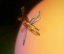

Eukaryotes require ubiquitin for their own survival. Although this pathway is, to date, poorly characterized in eukaryotic parasites, it is axiomatic that Plasmodium uses ubiquitin and other ubiquitin-like (UBL) modifiers to regulate its physiology. Therefore, members of these parasitic pathways present interesting candidates for biological manipulation. We are using a combination of functional proteomics, genetics and crystallography to study ubiquitin and UBL-pathway components. Characterization of these pathways will shed light on ubiquitin processing in non- mammalian organisms and potentially uncover important targets to prevent Plasmodium infection and replication in humans.
The role of the ubiquitin-proteasome system in antigen presentation and in the regulation of membrane trafficking places it squarely in the centre of host defense against pathogens. A characterization of changes in host protein degradation, targeting and transcription (all processes controlled by ubiquitin) upon exposure to P. falciparum, should work towards uncovering mechanisms behind the immune suppression associated with this disease. We are studying the effect of parasites on host protein ubiquitination through biochemical and proteomic approaches.
Low complexity regions (LCR) are amino acid motifs found in proteins of many organisms spanning humans to yeast. LCRs comprise tandem repeats of amino acid blocks as well as homo-repeats of hydrophilic amino acid stretches. Plasmodium falciparum in contains prominent LCRs in over 90% of its proteome. Of these regions, the most striking are the unusual poly-asparagine stretches. Although single amino acid repeats can be found in a myriad of other organisms, asparagine enrichment is characteristic to Plasmodium. The functional relevance of these regions is poorly understood. We are employing parasite and mouse transgenics in conjunction with sequencing and bioinformatic analysis to probe the function, origin and maintenance of these parasitic LCRs.